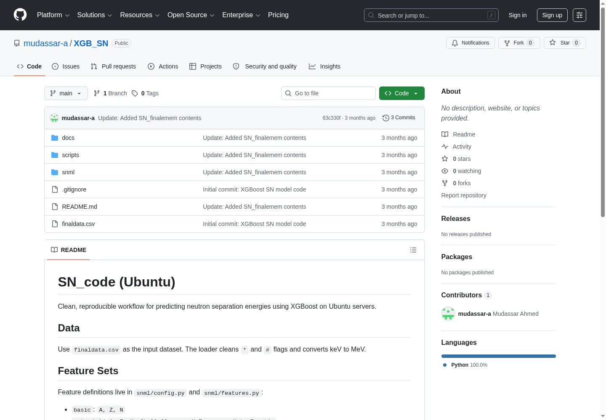
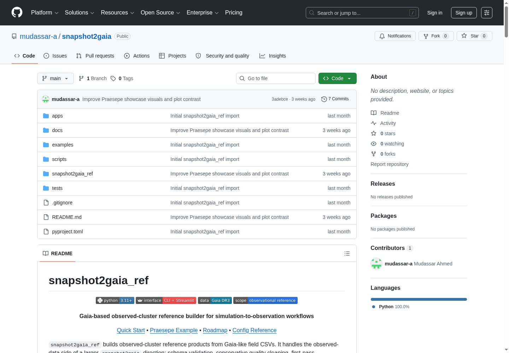
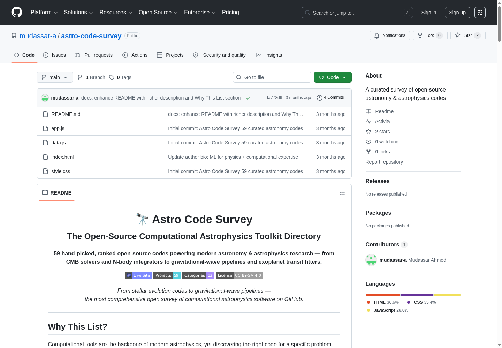

Physics | Applied AI | Astrophysics & Nuclear Research
Physics master's graduate with hands-on experience in scientific programming, computational modeling, applied machine learning, and teaching. My work connects nuclear-structure data, Gaia/star-cluster analysis, and reproducible research software, with a practical style suited to research teams, applied AI roles, and physics or astro-focused projects.
Chinese Physics C, 50(2), 024109 (SCI-indexed, IF: 3.6)
DOI: 10.1088/1674-1137/ae19dc →
Clean, reproducible workflow for predicting neutron separation energies with XGBoost. The project includes nuclear-data cleaning, configurable feature sets, tuning/evaluation stages, and saved environment metadata to support repeatable model comparisons.
View on GitHub
Gaia-based observed-cluster reference builder for simulation-to-observation workflows. It validates Gaia-like CSV files, applies conservative quality cleaning and first-pass membership cuts, and exports diagnostic plots, tables, reports, and run metadata.
View on GitHub
Curated open-source computational astrophysics toolkit directory with an interactive companion site. The survey organizes 59 public projects across 13 research categories to make relevant astronomy and astrophysics software easier to discover and compare.
View on GitHubWorked with AGAMA to generate initial conditions and snapshots for star-cluster and galaxy models using Plummer, King, NFW, and Hernquist-type profiles, building familiarity with dynamical modeling and introductory N-body workflow concepts.
Derived galaxy parameters using SDSS photometric data, Aladin Sky Atlas, Hubble-Lemaître Law, and Tully-Fisher relation.
Developed reproducible pipeline for Optuna-based hyperparameter search, CatBoost/XGBoost model training, and SHAP-based feature importance analysis.
Implemented and validated density-dependent point-coupling parametrization in relativistic mean-field code.
Institute of Space Technology, Islamabad, Pakistan
CGPA: 3.63/4.00 | Cum Laude
Thesis: AI-Driven Prediction of Nuclear Charge Radii: A Machine Learning Integration of Mean-Field Theory, Möller-Nix Model, and Experimental Data
Relevant coursework: Stellar Astronomy & Astrophysics, Galaxies, Theoretical Astrophysics, and High Energy Astrophysics
University of Gujrat, Pakistan
GPA: 3.43/4.00
University of the Punjab, Lahore, Pakistan
72.2%
Institute of Space Technology (2025)
Second Position in B.Sc. Examination
Machine Learning & Cloud Computing
Institute of Space Technology
Support student projects in machine-learning applications for nuclear physics, including model development, feature engineering, scientific-computing workflows, result presentation, and scientific writing.
National Centre for GIS & Space Applications, IST
Automated nuclear-structure calculations, worked with scientific-code compilation and workflow modification, and contributed to model-to-data comparison tasks connected with neutron separation-energy research.
Aspire College Dina, Punjab
Courses: Computing Tools for Mathematics, C++ basics, Thermodynamics, Electronics, Electricity & Magnetism, Tensor and Vector Analysis, Mechanics, Probability and Statistics
Aspire College Dina, Punjab
Taught undergraduate-level physics and mathematics courses in a full-time role before appointment as visiting lecturer.
Aspire College Dina
Developed and deployed a Moodle-based Learning Management System and coordinated academic programs and curriculum-development activities.
I welcome conversations around physics research, applied AI, astrophysics, nuclear astrophysics, scientific computing, teaching, and data-driven physical-science projects.